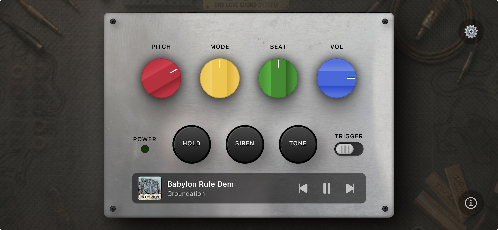

Authentic analog character
Carefully tuned waveforms to sit like a real hardware siren in the mix.
The Legendary Dub Siren, In Your Pocket.
Inspired by classic Jamaican sound systems, Dub Siren - NJD Style captures the raw, hands‑on feel of hardware siren boxes – tuned for live performance and studio sessions.

Key Features & Sound
Dial in siren sweeps, trigger stabs, and evolving textures that cut through any sound system.
Carefully tuned waveforms to sit like a real hardware siren in the mix.
Switch between sine, square, triangle, and sawtooth with the MODE control.
Tap, latch, or hold notes using dedicated TRIGGER and HOLD controls.
Shape evolving sweeps and patterns with BEAT speed and PITCH range.
Quickly match levels to your rig with a global VOL knob.
Engage the Siren and Tone buttons for unique effects when BEAT is set to its fourth position.
Built-in delay
Dub Siren - NJD Style includes a dedicated delay section with presets tuned for classic dub textures.


Connect Spotify
Link Dub Siren - NJD Style to your Spotify account for a seamless dubbing experience.